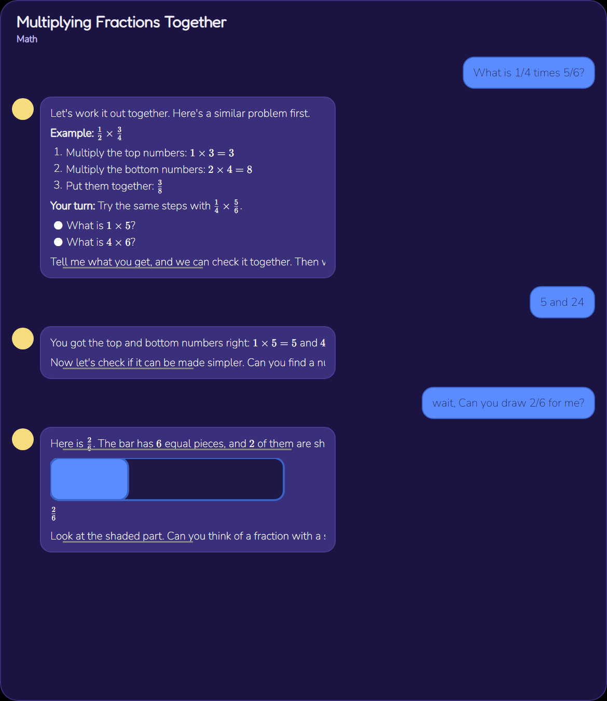
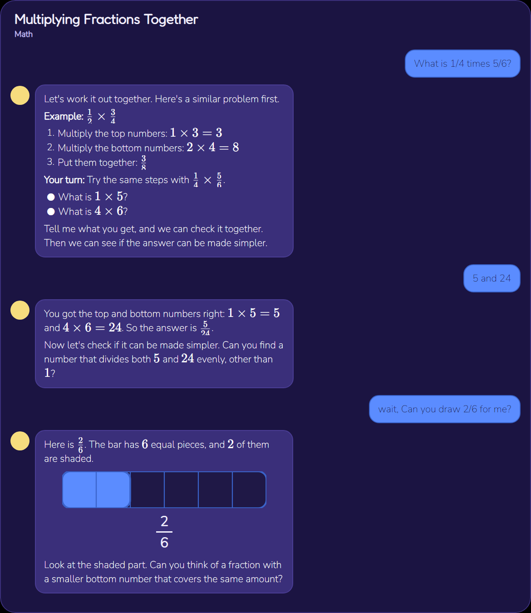
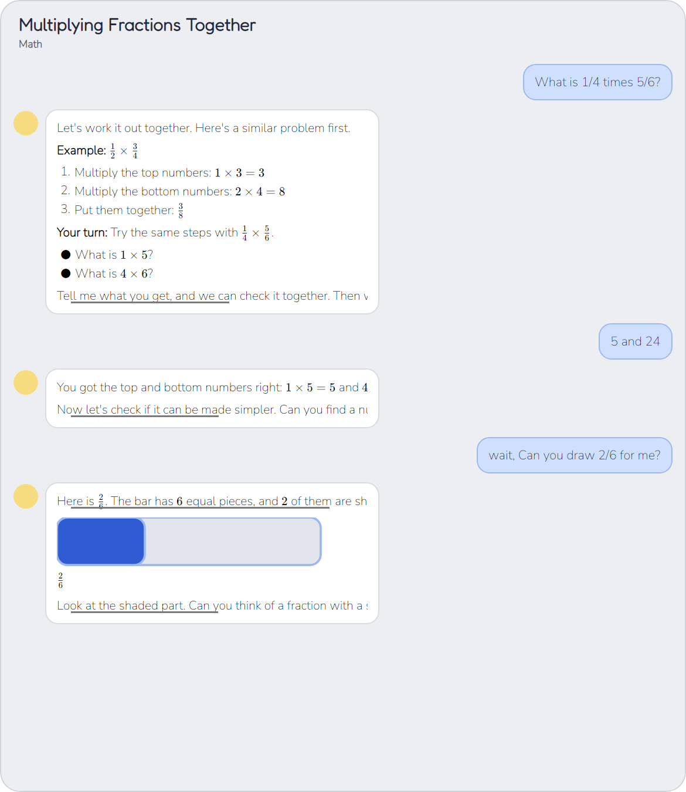
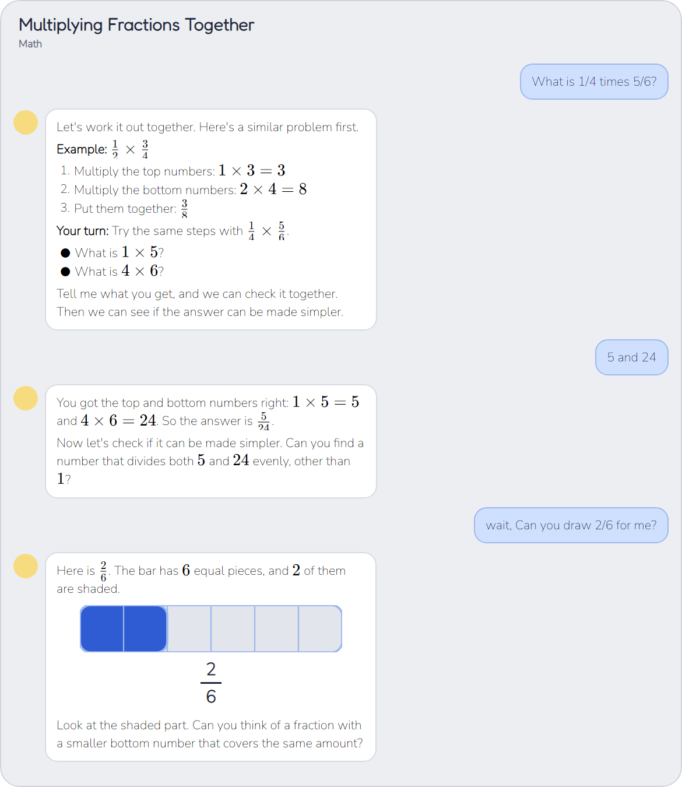
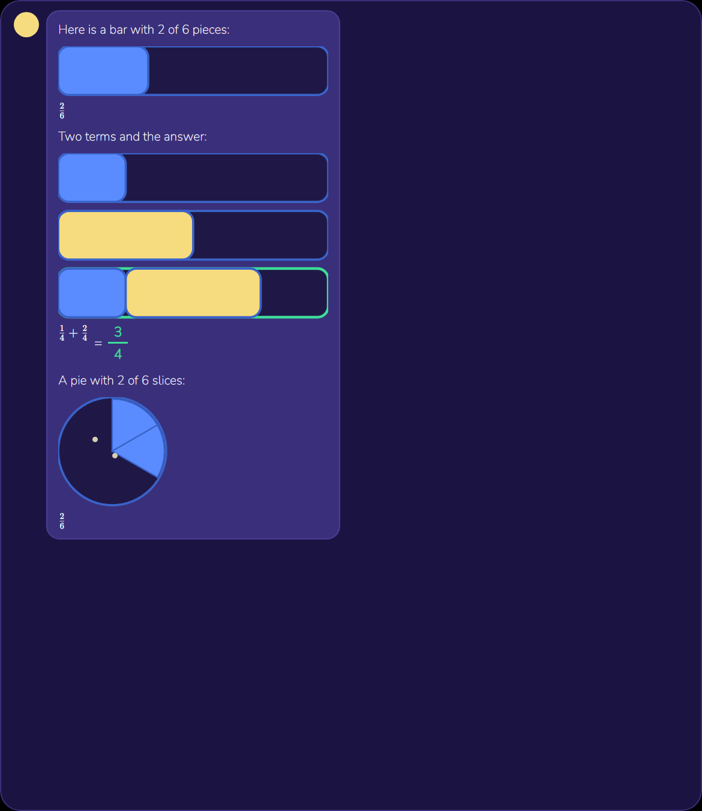
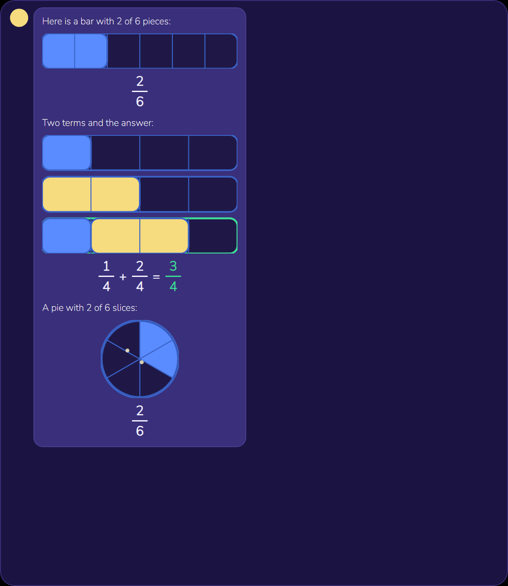
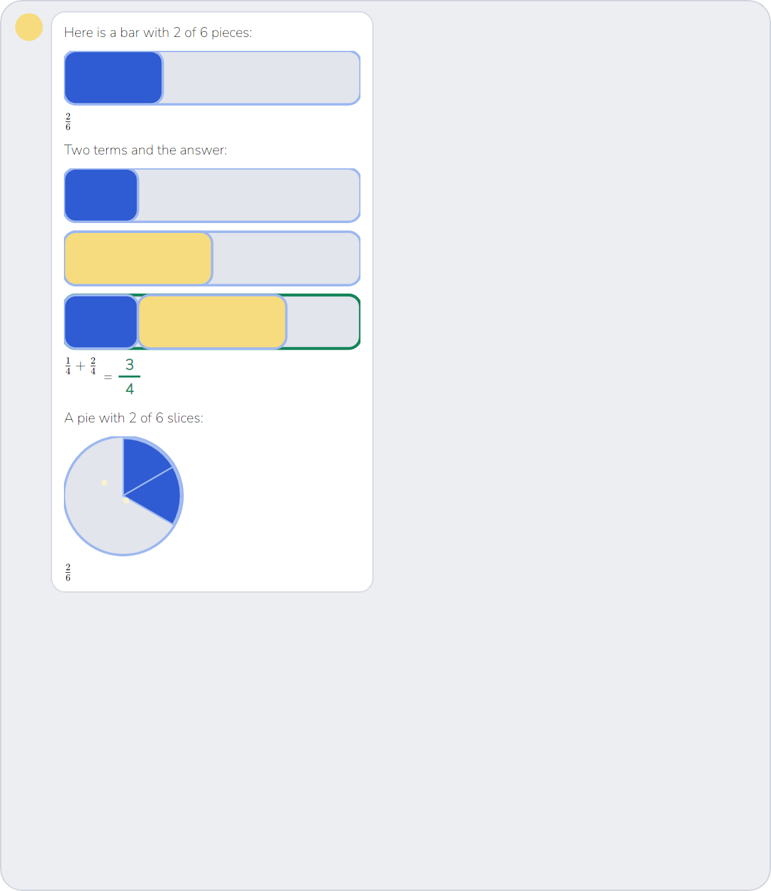
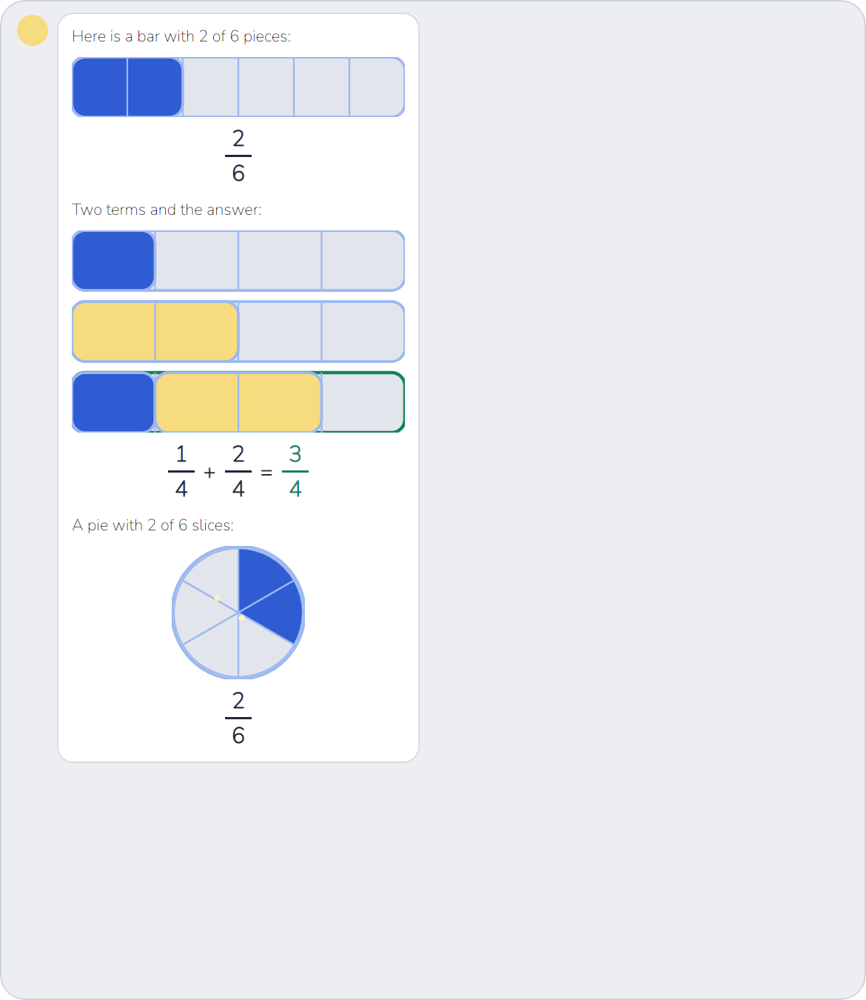

Exact replies from the production “Multiplying Fractions Together” chat, rendered with the real Avalonia app
and theme resources at 150% scaling. The “before” images are v0.17.5 (tag v0.17.5); the “after”
images are the Job 18.7 build. Both themes are shown.








Job187BubbleTests renders all three exact replies at bubble widths 300, 420 and 560 DIP and
100%, 125%, 150% and 200% render scaling in both themes. It asserts that no control is outside the bubble,
there is no inner ScrollViewer, and the bubble grows to fit. Picture tests assert 5 divider lines
for [[bar 2/6]], 15 for [[bars 1/6 + 2/6]], and 6 slices for [[pie 2/6]].